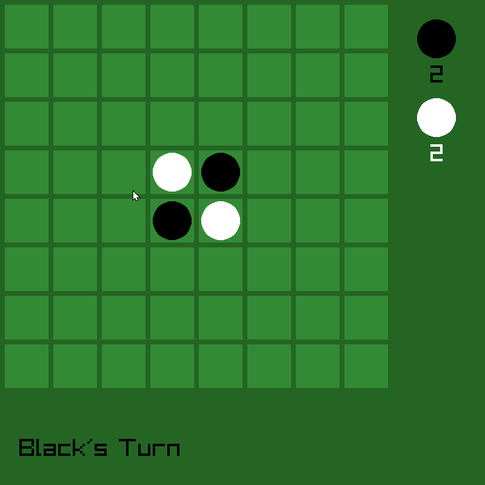

Welcome to Othello, a classic board game that has challenged players for decades. In this version of the game, you will have the opportunity to play against an advanced bot that uses cutting-edge non-AI technology to make strategic moves and provide a challenging experience.

At the start of the game, the board will be set up with two black discs and two white discs in the center four squares. Players take turns placing their colored discs on the board with the goal of flipping their opponent's discs to their own color. The game ends when the board is full or both players can no longer make any moves.
One of the most exciting aspects of playing against the advanced bot is the ability to analyze its moves and learn from its strategies. As you play more games, you will develop a deeper understanding of the game and become a better player yourself.
- Måns Sunnerstam
Check out the github repo here!